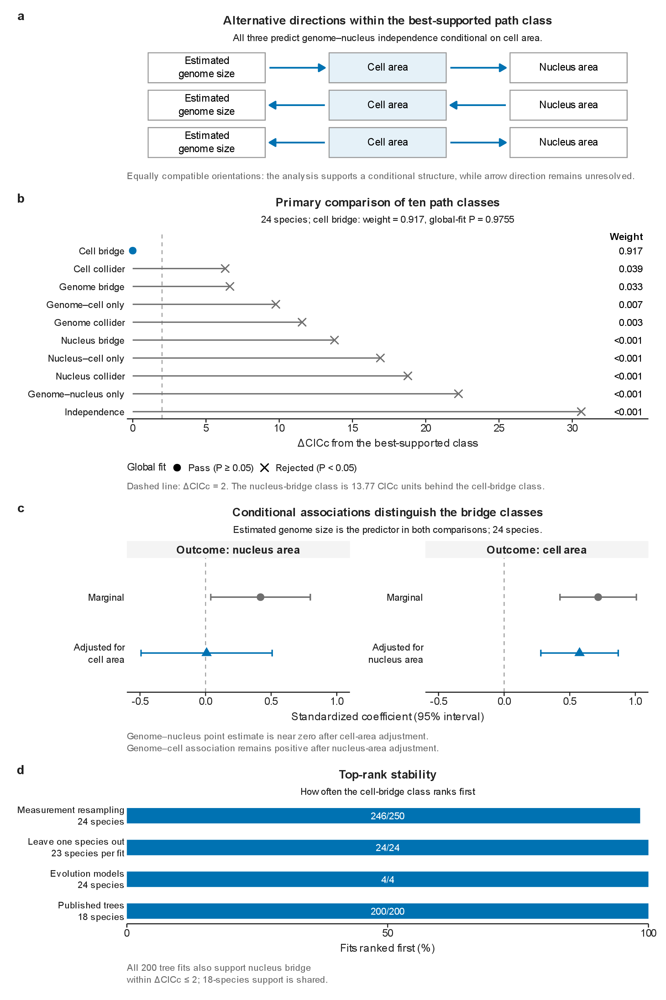
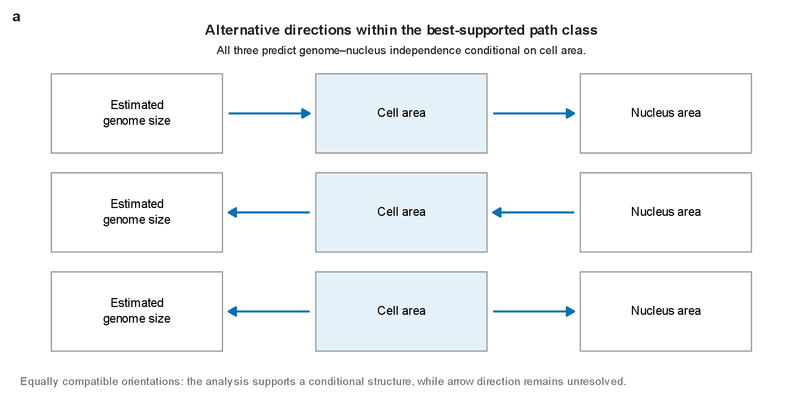
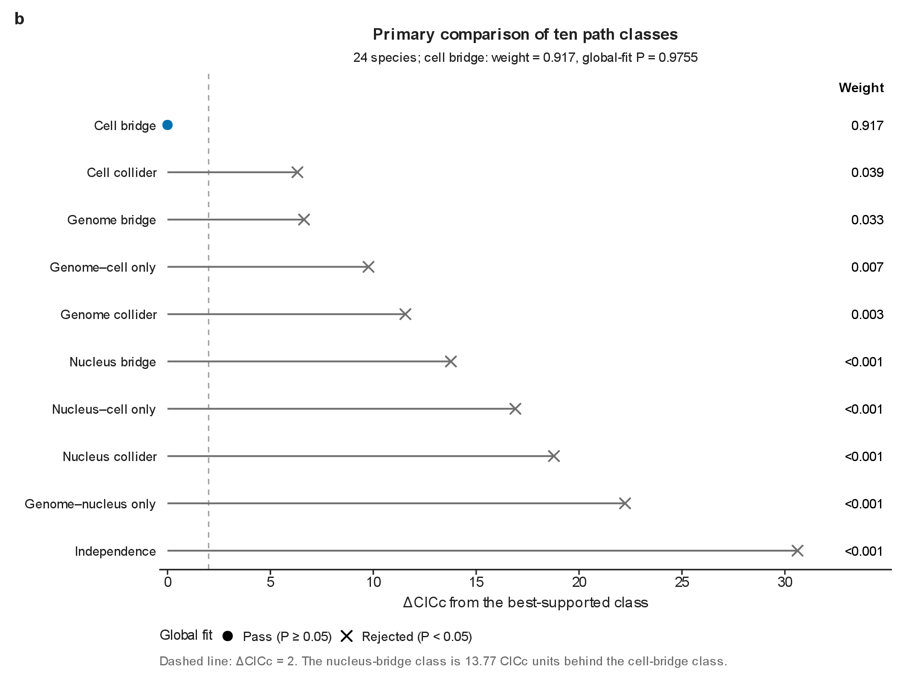
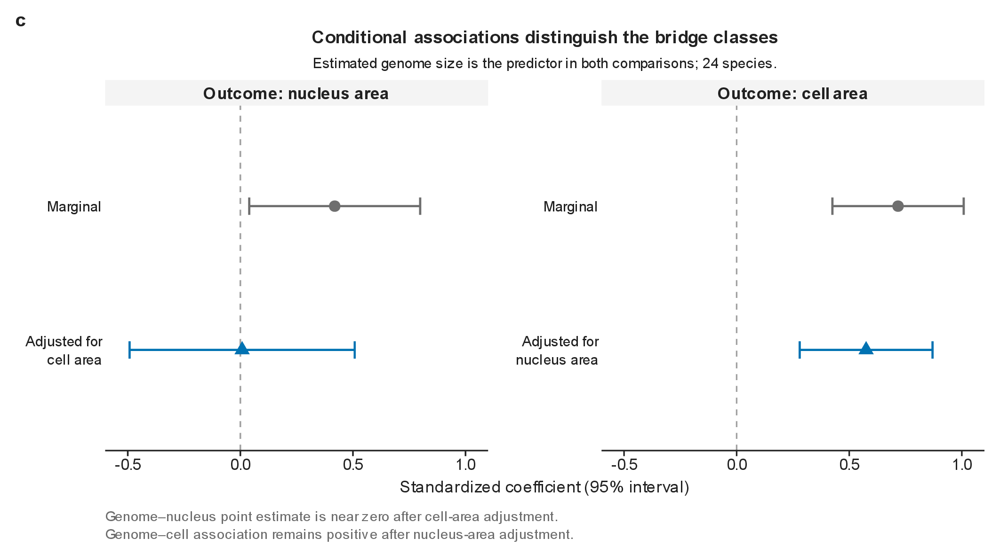
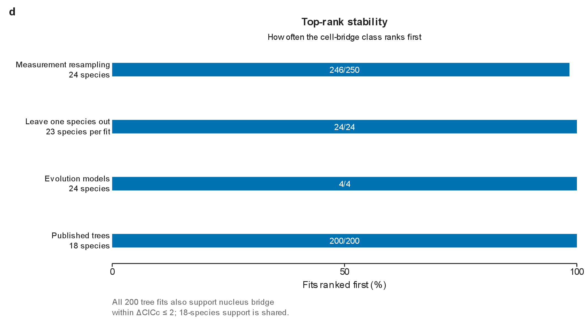

Preserved before the weighted-arrow revision. Return to the current figure.

Phylogenetic path comparisons favor the class connecting estimated genome size and nucleus area through cell area in the 24-species dataset. The winning cell-bridge equivalence class supports a mechanistic question about how the three traits covary, while retaining all three compatible causal orientations. (a) The cell-bridge class contains three distinct directed acyclic graphs, reproduced from the frozen candidate-DAG enumeration. Estimated genome size -> cell area -> nucleus area, its reverse chain, and cell area -> both traits all imply genome–nucleus conditional independence given cell area. These orientations are statistically indistinguishable in this three-trait comparison; their common conditional structure is the supported result. (b) Ten testable path-equivalence classes are ranked by CICc using 24 species, standardized log10 traits, the supplied dated tree and Pagel-lambda regressions. The cell-bridge class has CICc = 13.3829, Fisher C = 0.04959, one independence claim, global-fit P = 0.97551, and relative weight = 0.91674. Its tested claim is the residual genome–nucleus association after conditioning on cell area (P = 0.97551). All nine other tested classes fail the P >= 0.05 global-fit criterion; the nucleus-bridge class has delta CICc = 13.77171 and global-fit P = 0.0009971. Weights compare only the supplied ten classes; six saturated DAGs impose no testable d-separation claim and are not ranked. All primary component regressions have fitted lambda approximately 1e-7. No direction-specific coefficients are assigned to the winning equivalence class. (c) Released S28 Pagel-lambda coefficients compare marginal and conditional associations, with standardized log10 traits and estimated genome size as predictor in all four regressions. The genome–nucleus coefficient is 0.41902 (95% normal interval 0.03960 to 0.79844) marginally, and 0.00792 (-0.49195 to 0.50780) after adjusting for cell area. The genome–cell coefficient is 0.71666 (0.42523 to 1.00810) marginally, and 0.57486 (0.27994 to 0.86977) after adjusting for nucleus area. Intervals are the stored S28 normal approximations (coefficient +/- 1.96 standard errors), not the t intervals used for the Figure 5 pairwise displays. The adjusted genome–nucleus P is 0.97551; the adjusted genome–cell P is 0.0009971. These estimates explain the contrasting independence tests but are not estimates of indirect causal effects. The broad adjusted genome–nucleus interval does not establish an exactly zero effect. No models were refitted and these coefficients are not labelled on the three equivalent DAG orientations. (d) Cell bridge ranks first in 246/250 measurement resamples, 24/24 leave-one-species-out fits, 4/4 evolutionary-model specifications and 200/200 published-tree fits. The first and third checks retain 24 species, species omission retains 23 per fit, and the published-tree analysis contains only 18 species. All 200 published-tree fits also retain nucleus bridge as globally admissible and within delta CICc <= 2, so top ranking does not indicate unique support. On the focal tree pruned to the same 18 species, cell-bridge weight is 0.43357 and nucleus-bridge weight is 0.32240 (delta CICc = 0.59252); the published main tree gives essentially the same values. These reduced-species results primarily expose dependence of discrimination on taxon coverage, rather than establishing strong topology robustness. An accompanying simulation-calibration figure preserves all eight released recovery settings. All results are taken from the frozen path-analysis release; this figure introduces no model refitting or data filtering. Genome size is an IOD-derived D. fuscus assembly-anchored estimate, and cellular traits describe selected large erythrocytes and their nuclei. Measurement uncertainty and taxon coverage are evaluated by the displayed sensitivity analyses.
No note entered.

The cell-bridge class contains three distinct directed acyclic graphs, reproduced from the frozen candidate-DAG enumeration. Estimated genome size -> cell area -> nucleus area, its reverse chain, and cell area -> both traits all imply genome–nucleus conditional independence given cell area. These orientations are statistically indistinguishable in this three-trait comparison; their common conditional structure is the supported result.
No note entered.

Ten testable path-equivalence classes are ranked by CICc using 24 species, standardized log10 traits, the supplied dated tree and Pagel-lambda regressions. The cell-bridge class has CICc = 13.3829, Fisher C = 0.04959, one independence claim, global-fit P = 0.97551, and relative weight = 0.91674. Its tested claim is the residual genome–nucleus association after conditioning on cell area (P = 0.97551). All nine other tested classes fail the P >= 0.05 global-fit criterion; the nucleus-bridge class has delta CICc = 13.77171 and global-fit P = 0.0009971. Weights compare only the supplied ten classes; six saturated DAGs impose no testable d-separation claim and are not ranked. All primary component regressions have fitted lambda approximately 1e-7. No direction-specific coefficients are assigned to the winning equivalence class.
No note entered.

Released S28 Pagel-lambda coefficients compare marginal and conditional associations, with standardized log10 traits and estimated genome size as predictor in all four regressions. The genome–nucleus coefficient is 0.41902 (95% normal interval 0.03960 to 0.79844) marginally, and 0.00792 (-0.49195 to 0.50780) after adjusting for cell area. The genome–cell coefficient is 0.71666 (0.42523 to 1.00810) marginally, and 0.57486 (0.27994 to 0.86977) after adjusting for nucleus area. Intervals are the stored S28 normal approximations (coefficient +/- 1.96 standard errors), not the t intervals used for the Figure 5 pairwise displays. The adjusted genome–nucleus P is 0.97551; the adjusted genome–cell P is 0.0009971. These estimates explain the contrasting independence tests but are not estimates of indirect causal effects. The broad adjusted genome–nucleus interval does not establish an exactly zero effect. No models were refitted and these coefficients are not labelled on the three equivalent DAG orientations.
No note entered.

Cell bridge ranks first in 246/250 measurement resamples, 24/24 leave-one-species-out fits, 4/4 evolutionary-model specifications and 200/200 published-tree fits. The first and third checks retain 24 species, species omission retains 23 per fit, and the published-tree analysis contains only 18 species. All 200 published-tree fits also retain nucleus bridge as globally admissible and within delta CICc <= 2, so top ranking does not indicate unique support. On the focal tree pruned to the same 18 species, cell-bridge weight is 0.43357 and nucleus-bridge weight is 0.32240 (delta CICc = 0.59252); the published main tree gives essentially the same values. These reduced-species results primarily expose dependence of discrimination on taxon coverage, rather than establishing strong topology robustness.
No note entered.